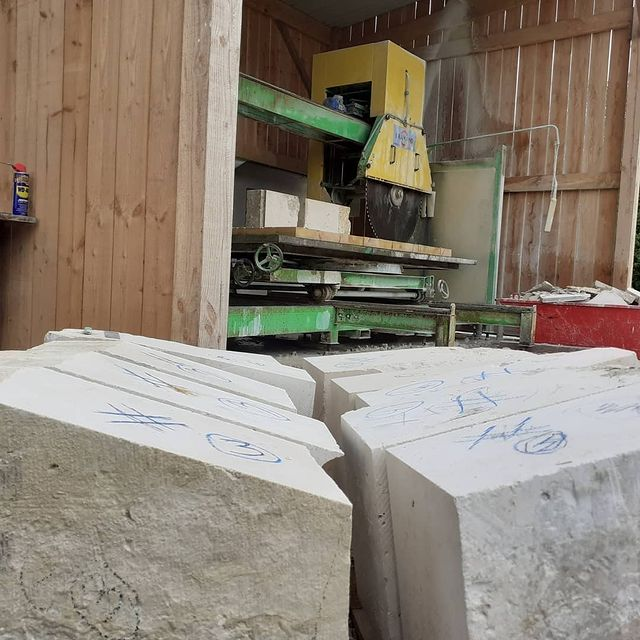
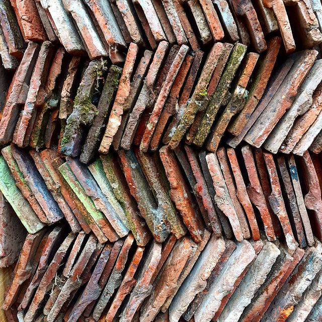

Pierre de taille
Blocs de calcaire local et éléments de récupération, parfaits pour les encadrements et aménagements.
Catalogue
Terres cuites
Tomettes anciennes nettoyées, triées et prêtes à poser avec différents formats carrés, briques et tuiles de pays.
CatalogueBois d'ouvrage
Poutres anciennes de récupération et divers bois d'œuvre. Différentes sections disponibles, bois sec et stabilisé.
CatalogueMenuiseries anciennes
Portes de granges, portes d'entrée en chêne massif et menuiseries intérieures de caractère pour préserver l'âme de votre demeure.
Catalogue